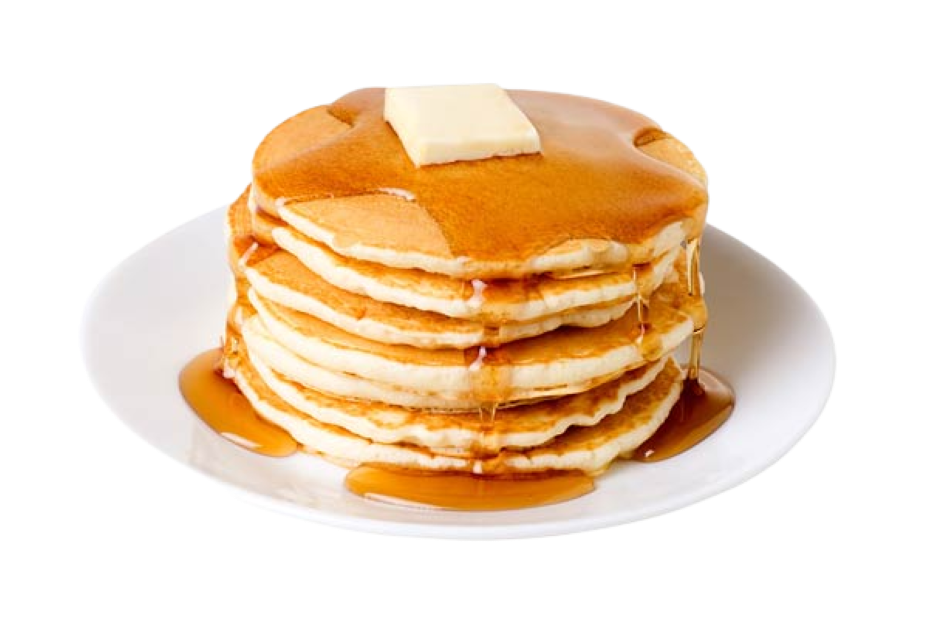

⍭ Pancakes ⍭
Ingredients:
- 1 cup all-purpose flour
- 2 tbsp sugar
- 1 tsp baking powder
- 1/2 tsp baking soda
- 1/4 tsp salt
- 3/4 cup milk
- 1/4 cup plain yogurt
- 1 large egg
- 2 tbsp melted butter
- Butter or oil for cooking
Steps:
- In a mixing bowl, whisk together the flour, sugar, baking powder, baking soda, and salt.
- In a separate bowl, whisk together the milk, yogurt, egg, and melted butter until well combined.
- Pour the wet ingredients into the dry ingredients and gently stir until just combined. It's okay if there are a few lumps.
- Preheat a non-stick skillet or griddle over medium heat. Add a small amount of butter or oil to lightly coat the surface.
- Pour a ladleful of batter onto the skillet for each pancake. Cook until you see bubbles forming on the surface, then flip and cook the other side until golden brown.
- Transfer the cooked pancakes to a plate and cover with a kitchen towel to keep them warm.
- Repeat the process with the remaining batter, adding more butter or oil to the skillet as needed.
- Serve the pancakes warm with your favorite toppings, such as maple syrup, fresh fruit, whipped cream, or chocolate chips.